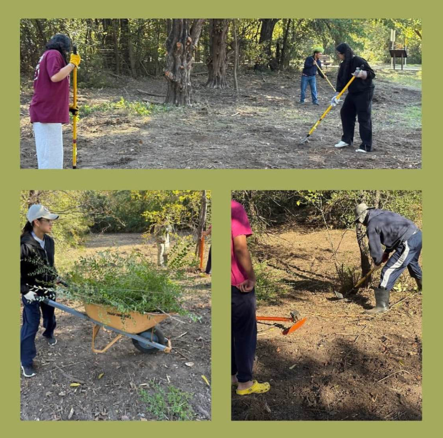

OS Gray Clean Up

OS Gray Clean Up(11/22/24)
On November 11th, 2024, members of Seguin Keyclub helped in the OS Gray's November monthly cleanup. Our members helped the local park clear the invasive species, such as privet, clearing the way for local species to begin growing
back into the ecosystem. All our members had plenty of fun and we thank everyone who came out and gave their time to the community! We hope to see everyone again and more next time!